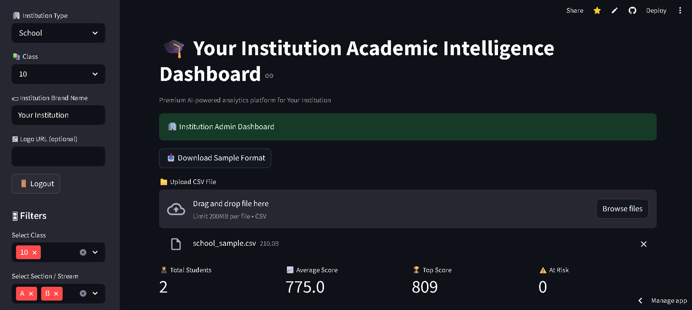
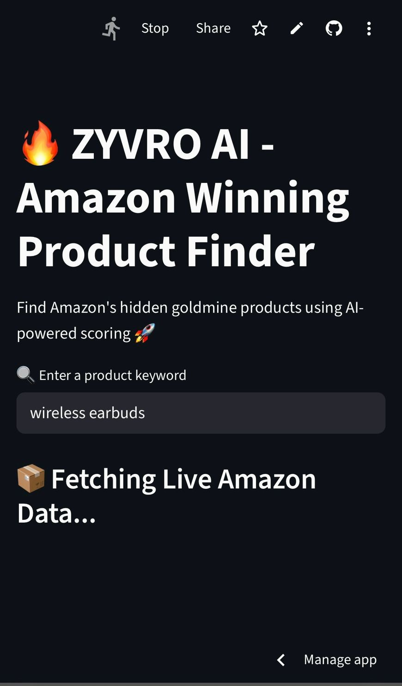
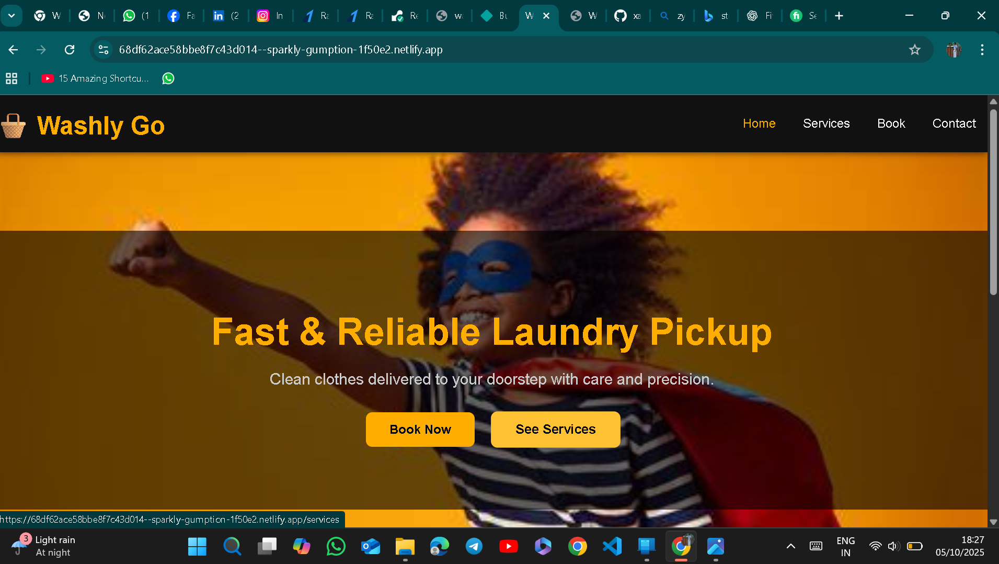
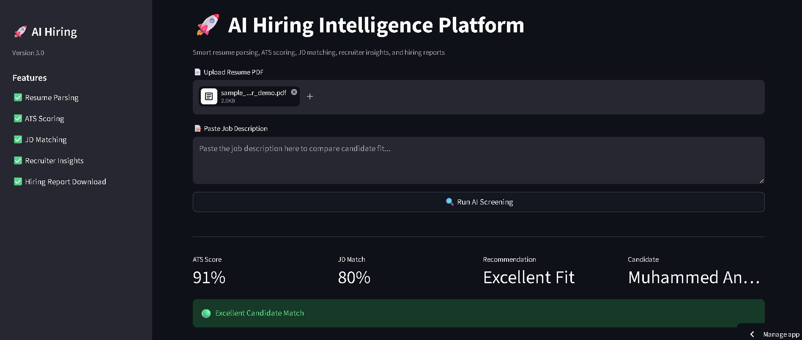

Artificial Intelligence
Machine learning, NLP, predictive systems, and practical AI workflows built around real problems.
Hi, I'm Muhammed Ansar
AI engineer and product builder crafting intelligent systems, beautiful digital products, and experiences that feel a little ahead of their time.
I turn complex ideas into things people can actually use.
I’m Muhammed Ansar, an AI engineer and hands-on product builder exploring the intersection of machine learning, automation, data, and modern web development. I love taking a concept from a rough sketch to a working experience.
My work spans predictive dashboards, NLP tools, real-world booking workflows, and AI-powered platforms. I care about the details — performance, usability, and the small interactions that make technology feel human.
A practical toolkit for designing, developing, and shipping intelligent digital products.
Machine learning, NLP, predictive systems, and practical AI workflows built around real problems.
From front-end interactions to APIs, databases, integrations, and deployable web applications.
Making raw data understandable and automating the repetitive work between insight and action.
A mix of AI systems, products, and experiments. Each one is a different problem worth solving.

AI / DATA SCIENCE01
AI / PRODUCT RESEARCH02
WEB / BOOKING03
AI / AUTOMATION04AI-assisted textbook study-material workflows with source-grounding and validation for classroom content.
A WhatsApp business-inquiry automation prototype with AI / human handoff and appointment workflows.
Every prototype is a chance to learn something new. The work keeps evolving, and so do I.
Good work lives between experimentation and execution. Here's how I like to get there.
Understand the user, context, and the real problem worth solving.
Map the experience, prototype quickly, and simplify the complex.
Connect clean code, capable models, and thoughtful interfaces.
Test, measure, polish, and move toward something genuinely useful.
OPEN TO CONVERSATIONS
A product to build, an AI challenge to solve, or just a good conversation? My inbox is open.
xansar89@gmail.com